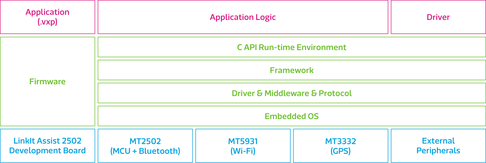

LinkIt™ Assist 2502
概述
联发科技LinkIt™ Assist 2502 让开发者在专业的开发环境下进行穿戴式与物联网（IoT）设备的硬件和软件原型开发。
本开发平台是基于现今最小的穿戴式系统级芯片组 (SoC), 联发科技 MT2502 （Aster）。此SOC 也能够和联发科技节能的 Wi-F i与 GNSS 芯片组一同运作，而这意味着您现在就可以很轻松的创建设备并与其他智能设备或云端服务连接。
LLinkIt Assist 2502开发平台是由 MT2502 (Aster) 和配套 GNSS 与 Wi-Fi 芯片组, 还有触摸皮肤 LCM CTP，Memory LCD 和OLED 屏幕（可更换）所构成的 LinkIt Assist 2502 开发平台，它的固件是以 RTOS 为核心。在核心之上运行着各种驱动程序、仲介软件与通信协定。Runtime运行环境提供了以C语言为基础的API来访问系统功能，让您使用LinkIt Assist 2502 软件开发工具包 SDK 2.0 创建应用。
功能特点
-
基于 C 语言的 API，让您访问和控制 MT2502 SoC 的硬件功能和周边硬件
-
提供 API 让您更新软件和固件，还有能运行在线固件更新的可能性。
-
综合各种通信、多媒体与用户接口，支持：
- GSM, GPRS and 蓝牙 2.1 和 4.0 (由 MT2502A 支持)
- 无线网络与卫星定位 (由配套芯片组支持)
- MP3/ AAC 音频播放
- JPEG 解码, 矢量字体 (由 Etrump 提供)，以及其他多媒体功能